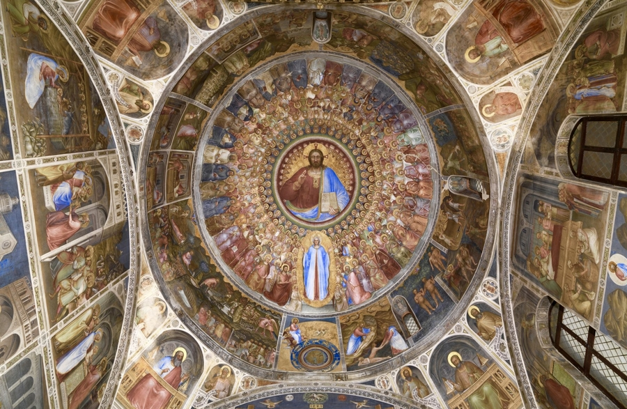
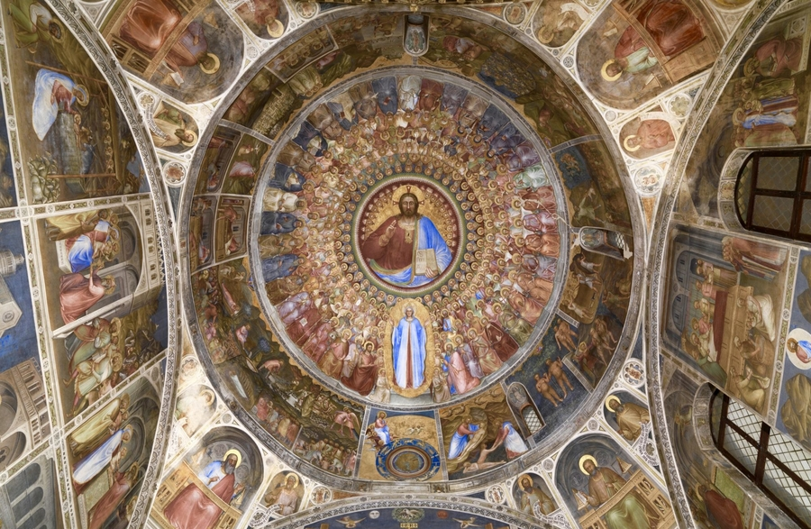

The Scrovegni Chapel (Italian: Cappella degli Scrovegni) is Padua's most notable sight.
It houses a cycle of frescoes completed in 1305 by Giotto. It was commissioned by Enrico
degli Scrovegni, a wealthy banker, as a private chapel once attached to his family's palazzo.
It is also called the "Arena Chapel" because it stands on the site of a Roman-era arena.
The fresco cycle details the life of the Virgin Mary and has been acknowledged by many to be
one of the most important fresco cycles in the world for its role in the development of European
painting. It also includes one of the earliest representations of a kiss in the history of art
(Meeting at the Golden Gate, 1305). Entrance to the chapel is an elaborate ordeal, as it involves
spending 15 minutes prior to entrance in a climate-controlled, airlocked vault, used to stabilize
the temperature between the outside world and the inside of the chapel. This is intended to protect
the frescoes from moisture and mold.
The Palazzo della Ragione, with its great hall on the upper floor, is reputed to have the largest roof
unsupported by columns in Europe; the hall is nearly rectangular, its length 81.5 m (267.39 ft), its
breadth 27 m (88.58 ft), and its height 24 m (78.74 ft); the walls are covered with allegorical frescoes;
the building stands upon arches, and the upper storey is surrounded by an open loggia, not unlike that which
surrounds the basilica of Vicenza. The Palazzo was begun in 1172 and finished in 1219. In 1306, Fra Giovanni,
an Augustinian friar, covered the whole with one roof. Originally there were three roofs, spanning the three
chambers into which the hall was at first divided; the internal partition walls remained till the fire of 1420,
when the Venetian architects who undertook the restoration removed them, throwing all three spaces into one and
forming the present great hall, the Salone. The new space was refrescoed by Nicolo' Miretto and Stefano da Ferrara,
working from 1425 to 1440. Beneath the great hall, there is a centuries-old market.
The most celebrated of the Paduan churches is the Basilica di Sant'Antonio da Padova, locally known as "Il Santo".
The bones of the saint rest in a chapel richly ornamented with carved marble, the work of various artists, among them
Sansovino and Falconetto. The basilica was begun around the year 1230 and completed in the following century. Tradition
says that the building was designed by Nicola Pisano. It is covered by seven cupolas, two of them pyramidal. There are
also four cloisters. The belltower has eight bells in C.
In the Piazza dei Signori is the loggia called the Gran Guardia, (1493–1526), and close by is the Palazzo del Capitaniato,
the residence of the Venetian governors, with its great door, the work of Giovanni Maria Falconetto, the Veronese architect-sculptor
who introduced Renaissance architecture to Padua and who completed the door in 1532. Falconetto was the architect of Alvise Cornaro's
garden loggia, (Loggia Cornaro), the first fully Renaissance building in Padua.[24] Nearby stands the Cathedral, remodelled in 1552 after
a design of Michelangelo. It contains works by Nicolò Semitecolo, Francesco Bassano and Giorgio Schiavone. The nearby Baptistry, consecrated
in 1281, houses the most important frescoes cycle by Giusto de' Menabuoi.
One of the best known symbols of Padua is the Prato della Valle, a 90,000 m2 (968,751.94 sq ft) elliptical square. This is one of the biggest
in Europe. In the centre is a wide garden surrounded by an oval canal, lined by 78 statues portraying illustrious citizens. It was created by
Andrea Memmo in the late 18th century. Memmo once resided in the monumental 15th-century Palazzo Angeli, which now houses the Museum of Precinema.
Abbey of Santa Giustina and adjacent Basilica. In the 15th century, it became one of the most important monasteries in the area, until it was
suppressed by Napoleon in 1810. In 1919 it was reopened. The tombs of several saints are housed in the interior, including those of Justine,
St. Prosdocimus, St. Maximus, St. Urius, St. Felicita, St. Julianus, as well as relics of the Apostle St. Matthias and the Evangelist St. Luke.
This is home to some art, including the Martyrdom of St. Justine by Paolo Veronese. The complex was founded in the 5th century on the tomb of
the namesake saint, Justine of Padua. The belltower has eight bells in B.
Link
 
